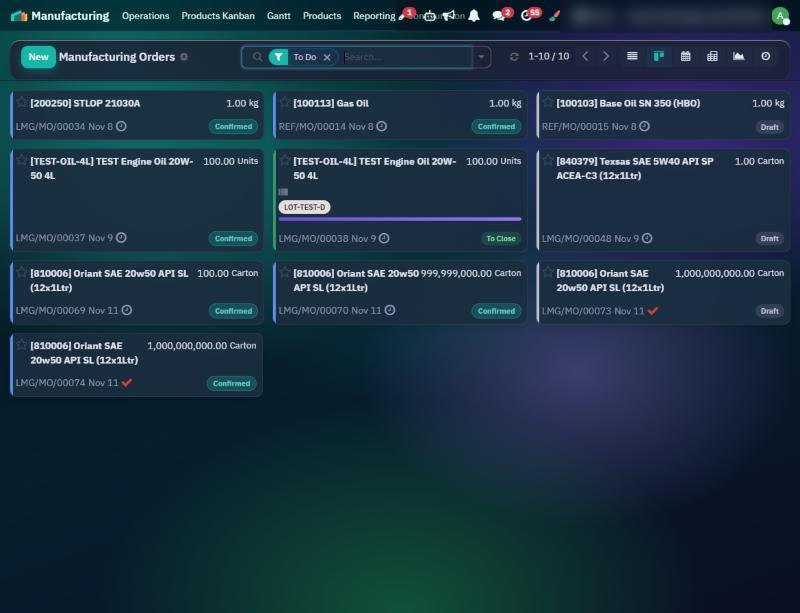
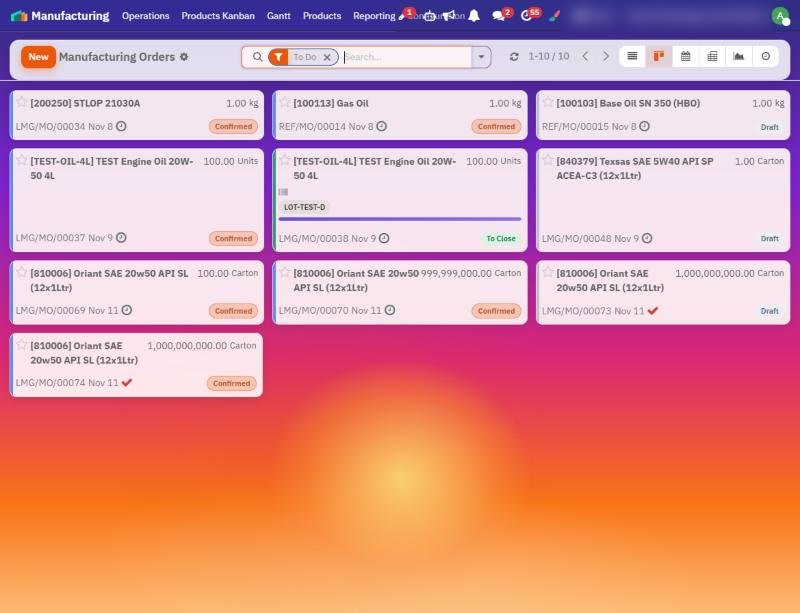
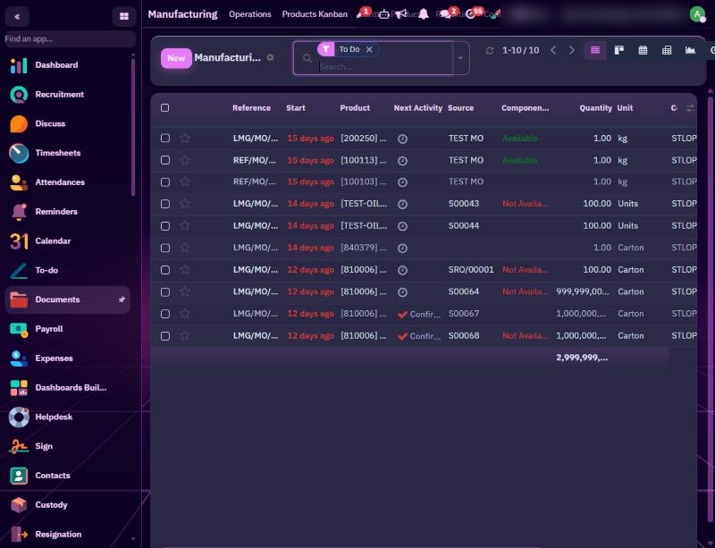
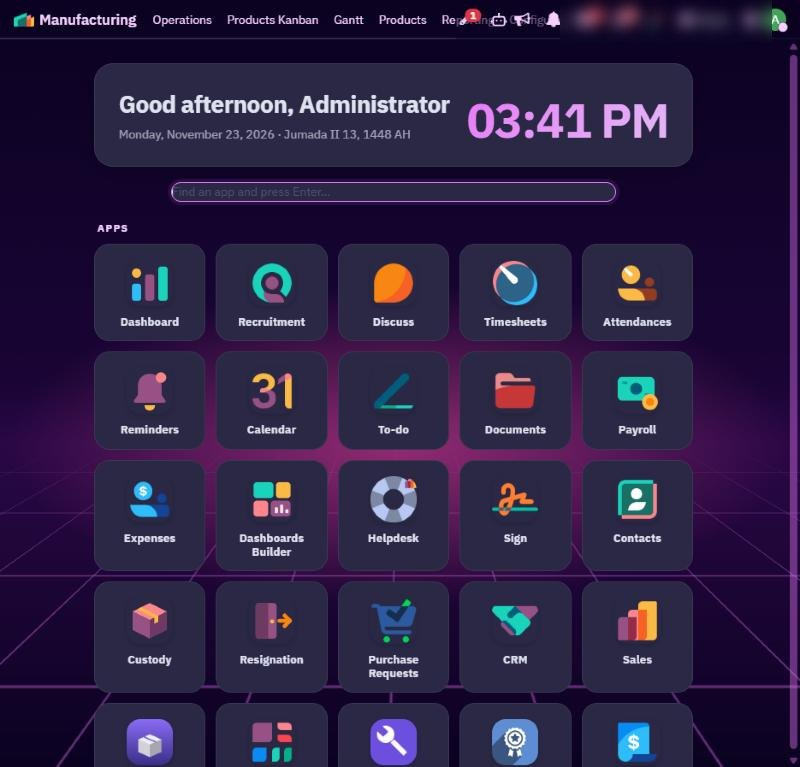
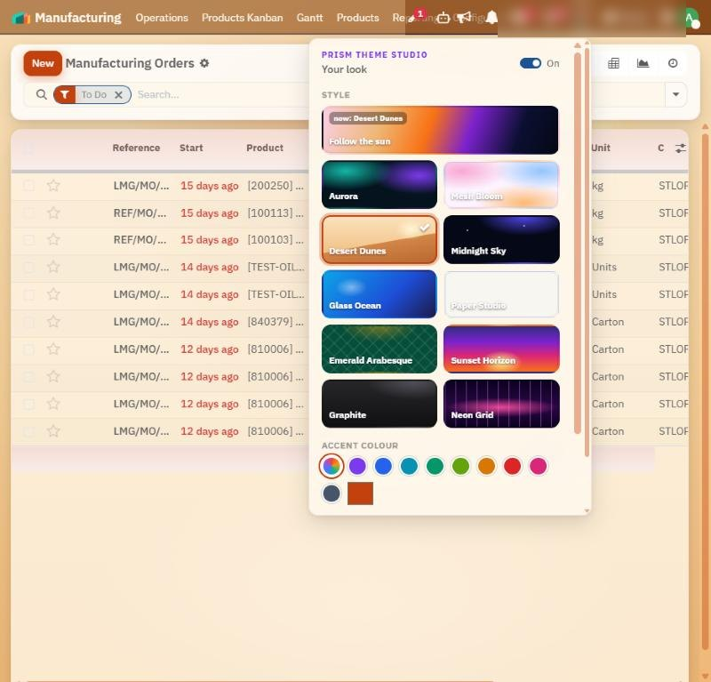

Twelve choices, drawn in CSS
Aurora, Mesh Bloom, Desert Dunes, Midnight Sky, Glass Ocean, Paper Studio, Emerald Arabesque, Sunset Horizon, Graphite and Neon Grid, plus Follow the sun (dawn, day, sunset, evening and night styles by the hour) and My photo (your own picture, softly blurred, with colours taken from it). No image files to load: the backgrounds are gradients and small vector patterns.
 Aurora: dark screens inside |
 Sunset Horizon: light screens inside |
Inside every screen
- Forms, lists, kanban, calendar, pivot, chatter, dialogs and menus become tinted frosted glass.
- List headers, selected rows, tabs, the status bar, kanban columns and search facets take your accent colour.
- Dark styles switch the screens to Odoo's dark mode; each user can also choose always light or always dark.
Sidebar and home screen
 A collapsible app sidebar with pinned favourites |
 "My home": greeting, clock, Gregorian and Hijri date, app tiles |
Occasions by the Hijri calendar
Ramadan lanterns, Eid stars, a Founding Day Sadu band, a National Day ribbon and winter snow appear on their own dates (Umm al-Qura calendar, built into the browser), small and never in the way. Each user can switch them off.
The studio
 |
- A colourful brush in the top bar opens it; every click shows at once and is saved for the user.
- Accent colour: nine swatches or any colour.
- Seven fonts, including Arabic modern and Arabic classic (fonts already on the computer, nothing downloaded).
- Comfortable or compact spacing; animation on or off.
- Effects: automatic turns the glass and animation down on a slow computer.
- Right-to-left ready.
|
For the company
- Settings > Prism Theme: a company style and accent colour (e.g. from the logo) for every user who has not chosen his own.
- Lock the look: the company style and colour for everybody (font, spacing, effects and menu stay personal).
- A company background photo, and the company style on the login page.
- Install it and nothing changes until a user (or the company) switches it on.
Technical
- Odoo 19, Community and Enterprise. Depends only on
web. English and Arabic. LGPL-3, free.
- Settings stored on the user (users change only their own) and sent with the session, so the theme is drawn before the first screen.
- Everything is scoped: with the theme off, no screen is touched. Light and dark mode supported, also with the standard
color_scheme cookie of Odoo Enterprise.
Author: Marwan Algaber